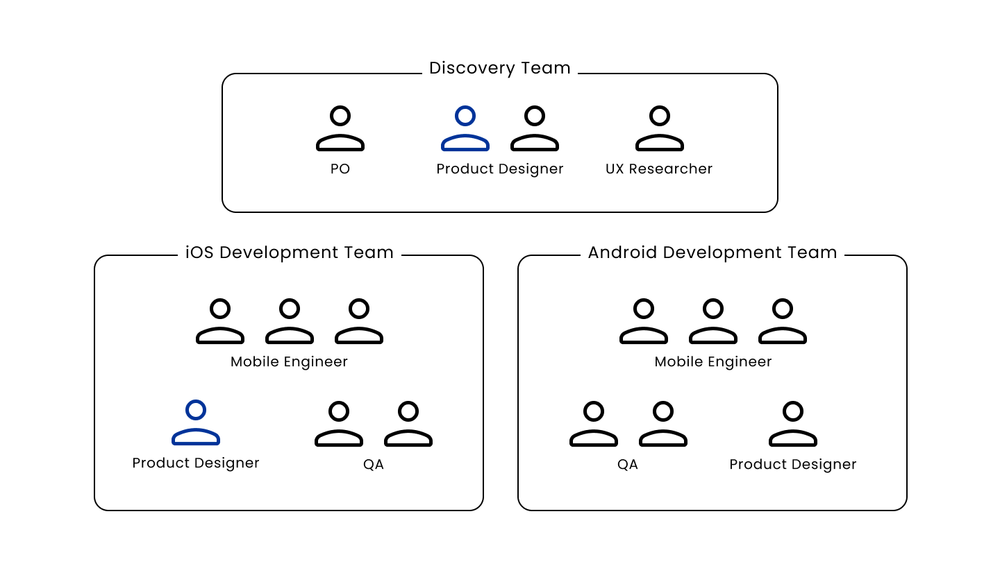
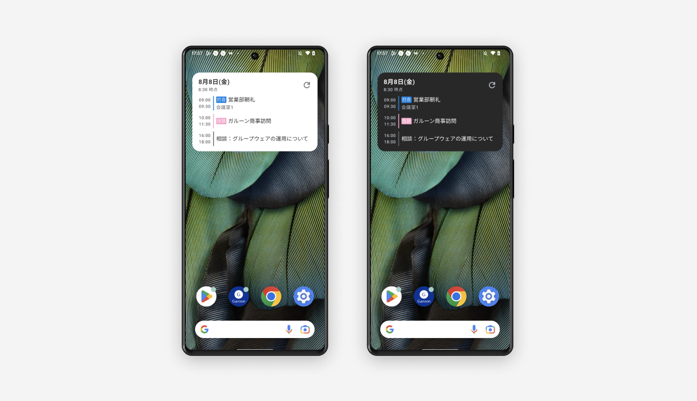
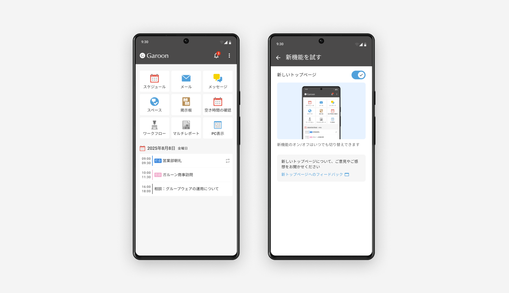

Garoon
サイボウズ株式会社の主力製品である大企業向けグループウェア「Garoon」のデザイナーとして従事。
要件定義
UIデザイン
スクラム
プロジェクトリード
Team
アプリ開発チーム全体ではデュアルトラックアジャイルの形を採用していました。
ディスカバリーチームとAndroid開発チームに所属し、要件検討と実装の橋渡しとなる役割を担っていました。

Activity details
スケジュール確認のためのウィジェット機能のデザイン作成を行いました。

アプリトップページのリニューアルプロジェクトのリードを行いました。
プロジェクトのスケジュールやタスクの管理を行い、社内ユーザーテストの企画や実施を担当しました。
